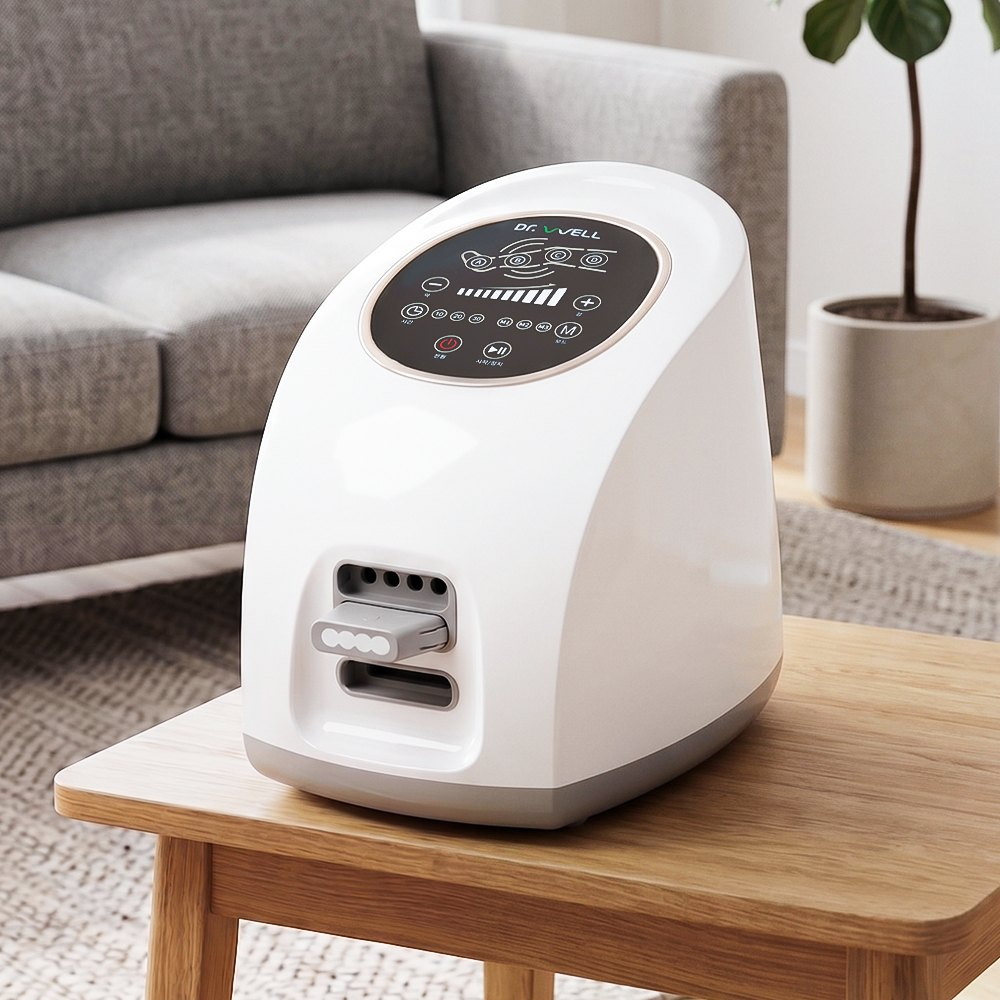
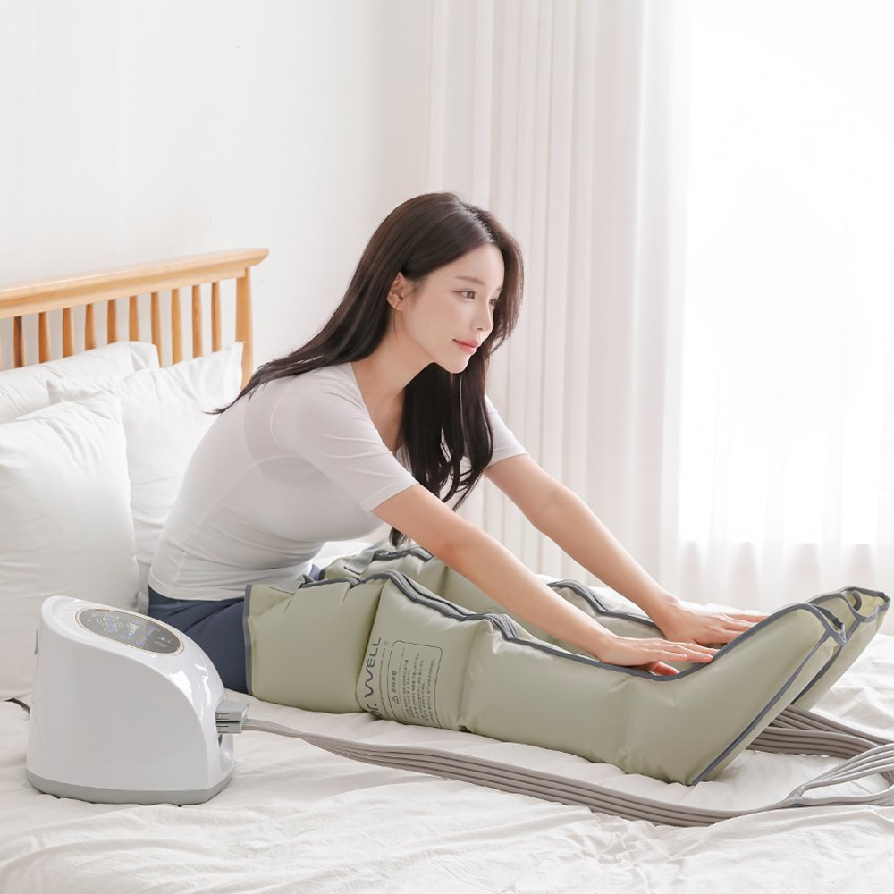
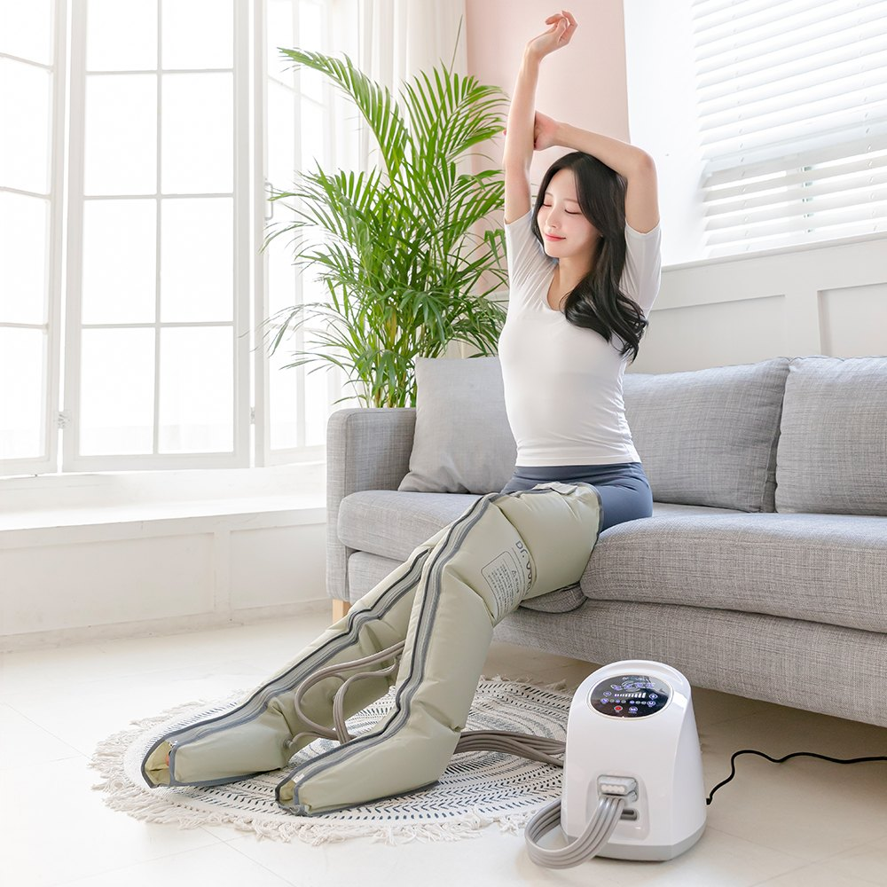
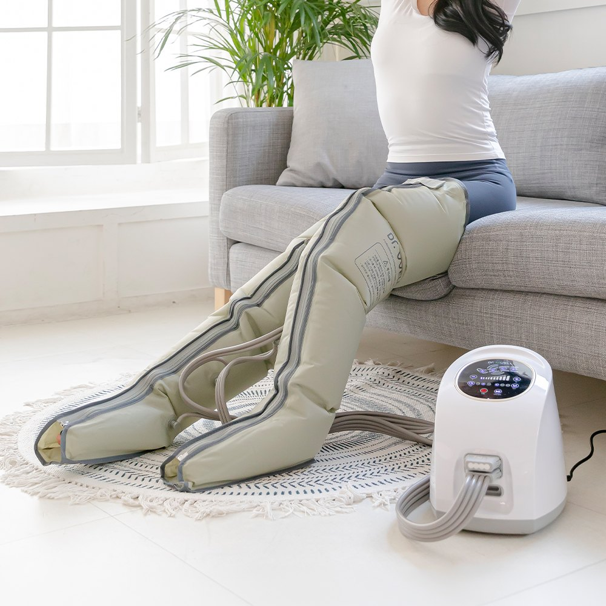

Dr.Well Airwave DR-5180 Review at a Glance
This Dr.Well Airwave DR-5180 review looks at one of Korea's most common at-home air compression leg massagers. Dr.Well (닥터웰) is a Korean home-health brand, and the Airwave DR-5180 is the kind of device you'll find in many Korean living rooms: long air cuffs that wrap your legs from foot to thigh, connected by hoses to a small white pump unit.
You press start, lie back, and the cuffs squeeze and release in waves. It's a hugely popular gift for parents in Korea, and also common with office workers and nurses who stand or sit all day.

How Air Compression Leg Massage Works
Each cuff has 4 air chambers. The pump fills them one after another, from the foot upward, then lets the air out. The feeling is a firm, rolling squeeze, a bit like a long hand massage that moves up your legs. Many people use it in the evening for heavy, tired legs. It isn't a medical treatment, but it's a relaxing daily routine.


Key Specs
| Item | Details |
|---|---|
| Brand / Model | Dr.Well (닥터웰) Airwave DR-5180 |
| Coverage | Leg cuffs from foot to thigh, 4 air chambers each |
| Intensity | 10 levels |
| Modes | 3 automatic modes + timer |
| Controls | Touch buttons on the unit |
| Pump | Manufacturer-claimed 15L air capacity |
| Power | 220V / 60Hz, 23W, wired |
| Unit size / weight | About 210 × 250 × 270mm, about 2.5kg |
| Made in | China (for a Korean brand) |
| Korean price | Around ₩139,000 at the official store (list ₩198,000) |


Photo note: These are 5 real product photos from the Korean listing. We didn't add any AI-generated images. Specs come from Dr.Well's official store and Danawa.
Using It at Home in Korea
- Lie down or sit back with your legs straight and supported.
- Wrap on the cuffs and check that each hose is pushed firmly into the unit. Loose connectors are a common complaint.
- Start low: Pick an auto mode and a low level for the first few sessions.
- Use the timer: Around 15–20 minutes is a typical session.
- Reduce noise: Put a folded blanket or mat under the unit on hard floors.
Air Compression vs. Other Leg Massagers
| Type | How It Feels | Coverage | Good For |
|---|---|---|---|
| Air compression (Airwave) | Rolling squeeze and release | Foot to thigh | Heavy, tired legs; lying down |
| Foot roller massager | Kneading rollers on soles | Feet only | Sore feet |
| Calf wrap massager | Squeeze, sometimes heat | Calves only | Small, portable use |
| Massage chair | Full-body rollers and air | Whole body | Big budget and big room |
Pros & Cons
✅ Pros
- Covers the whole leg, from foot to thigh.
- Strong pressure with 10 levels and 3 auto modes.
- Simple touch controls; easy for parents to use.
- Very popular in Korea, with over a thousand reviews on the official store.
⚠️ Cons
- The pump hums and can vibrate on hard floors.
- Cuffs and hoses take up space.
- Hose connectors can come loose.
- 220V Korean model; no foot rollers.
Who It Suits (and Who Should Skip It)
- Great for: People who stand or sit all day and have heavy legs by evening.
- Great for: A practical gift for parents who like simple, one-button devices.
- Maybe skip: If you need a quiet device, live in a 120V country without a converter, or want foot rollers.
- Ask a doctor first: If you have vascular disease, blood clots, severe varicose veins or are pregnant.
Dr.Well Airwave FAQ
What is the Dr.Well Airwave DR-5180?
It's a Korean air compression leg massager from Dr.Well (닥터웰). A control unit pumps air into long cuffs that wrap from the foot to the thigh, squeezing and releasing in waves. It has 10 intensity levels, 3 auto modes and a timer.
Can I use it in the US?
The Korean model runs on 220V/60Hz. In the US (120V) you'd need a proper step-up voltage converter rated for the unit, which is why we link to US-voltage air compression massagers on Amazon instead.
Is it loud?
It's not silent. The pump hums and can vibrate on hard floors. Korean buyers say putting a folded blanket or mat under the unit cuts the noise a lot.
Who shouldn't use an air compression massager?
People with blood clots, vascular disease, severe varicose veins, skin wounds on the legs, or who are pregnant should ask a doctor first. Everyone should start on a low level.
Air Compression Leg Massagers
The Dr.Well Airwave isn't sold on US Amazon. Browse similar US-voltage air compression leg massagers.